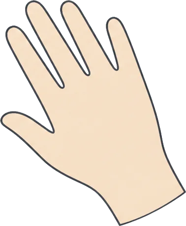

Schedule
開催予定
10月・11月の予定です。日程が変わるときは、このページと会員向けメールでお知らせします。
-
2026.1011日
くわしくオンライン
オンラインのつどい #19
10:00–11:30／Zoom／参加費無料・申込不要
-
2026.1024土
くわしく対面
対面のつどい
13:30–15:00／佐鳴台コミュニティ棟 2F 交流室／500円・先着12名
-
2026.1028水
くわしくオンライン
ヤングケアラーの相談時間
19:00–20:30／Zoom／無料・前日までに申込
-
2026.1108日
くわしくオンライン
オンラインのつどい #20
10:00–11:30／Zoom／参加費無料・申込不要
-
2026.1115日
くわしく対面
ケアラーカフェ「はなしの持ちより」
テーマ「介護のあとの時間」13:00–15:00／佐鳴台コミュニティ棟 2F 交流室／500円
Report
これまでの開催
画像を押すと、当日のチラシを大きく表示します。
-
終了しました
オンラインのつどい #16 のご案内
開催日2026年7月12日（日）
夏休みを前に、子どもを育てながら介護をしている方の参加が多い回でした。はじめての方が3名いらっしゃいました。
-
終了しました
オンラインのつどい #15 のご案内
開催日2026年6月14日（日）
設立5年の月。第1回から来ている方が、当時の話を少しだけしてくださいました。
-
終了しました
ケアラーカフェ「はなしの持ちより」のご案内
開催日2026年5月17日（日）
テーマは「眠れない夜のすごし方」。それぞれの工夫を持ち寄り、メモにして持ち帰っていただきました。
-
終了しました
出張講座「ヤングケアラーってなんだろう」のご案内
開催日2026年3月8日（日）
市内の公民館で、中高生と保護者の方に向けてお話ししました。終わったあと、数名の方が個別に声をかけてくれました。
そのほかの開催
- 2026年9月13日（日）
- オンラインのつどい #18敬老の日を前に、離れて暮らす親との関わり方を話す方が多い回でした。
- 2026年8月22日（土）
- 対面のつどい夏休み中の回。冷たい麦茶を用意して、いつもより少しゆっくり話しました。
- 2026年8月9日（日）
- オンラインのつどい #17お盆の帰省を前に、親族との話し合いについての話が多く出ました。
- 2026年6月27日（土）
- 対面のつどいオンラインでしか会ったことのなかった方どうしが、はじめて顔を合わせました。
Lecture
出張講座のご依頼を
受けつけています
学校や地域の集まり、職場の研修に世話人がうかがいます。
内容と時間は、ご希望をうかがってから一緒に決めます。